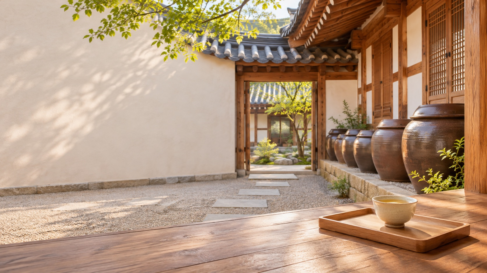
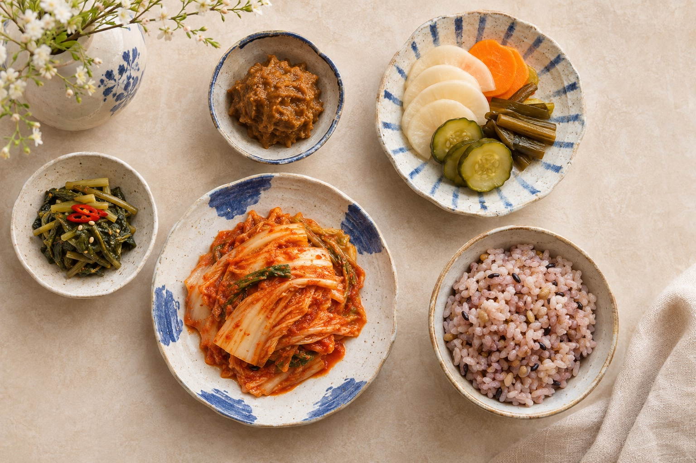
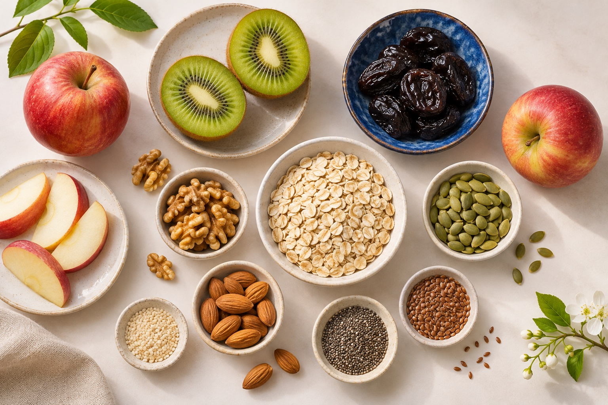
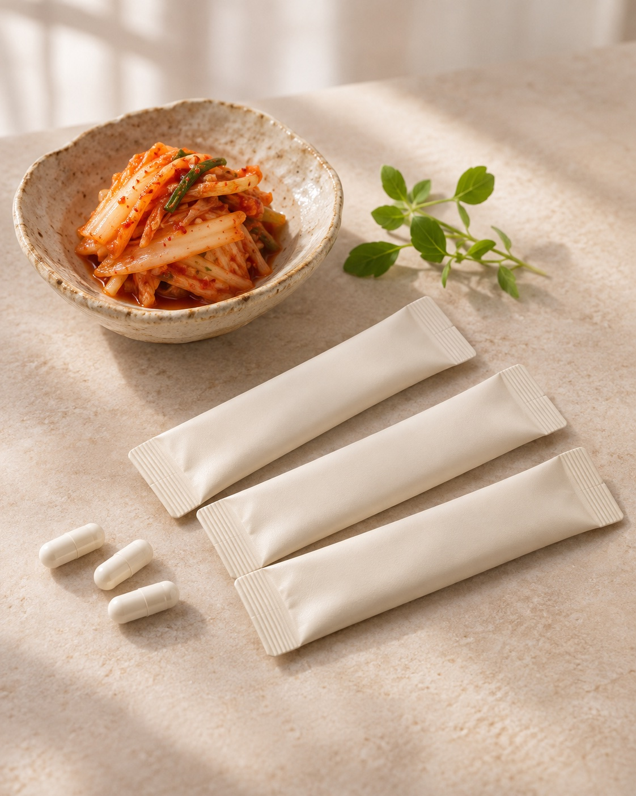

07:00 Morning
07:00 Morning
K-Lifestyle Wellness
발효의 지혜를
발효의 지혜를
오늘의 루틴으로
기다림으로 맛을 내는 발효, 정성으로 빚는 보양. 한국인의 일상에 오래 깃든 웰니스의 지혜를 과학으로 다시 읽고, 바쁜 오늘의 루틴으로 제안합니다.
24-Hour Wellness하루의 흐름에 맞춘
하루의 흐름에 맞춘
세 번의 웰니스
우리가 생각하는 웰니스는 특별한 순간에만 찾는 것이 아니라, 아침에 눈을 뜨는 순간부터 깊은 잠에 드는 밤까지 일상 속에 스며드는 것입니다.


Wellness Journal과학으로 읽는
목업용 콘텐츠 예시
과학으로 읽는
일상의 웰니스
연구원이 검수한 건강 정보를 쉽고 정확한 언어로 전합니다.

김치 한 접시에 담긴 미생물 이야기
3,500여 개의 유산균은 어디에서 왔을까? 발효식품과 장내 미생물의 관계를 알아봅니다.
R&D마이크로바이옴 R&D 센터 검수

MAC이 뭐길래? 미생물이 먹는 식이섬유
2014년 스탠퍼드대 연구진이 제시한 개념, MAC을 일상 식단에서 챙기는 방법.
R&D마이크로바이옴 R&D 센터 검수
Night Routine잠들기 전 1시간, 나이트 루틴 만드는 법
빛, 온도, 습관. 편안한 밤을 위한 작은 변화부터 시작해 보세요.
R&D제품개발팀 검수

5070을 위한 걷기 습관, 오만 보의 시작
무리하지 않고 꾸준히. 계절별로 즐기는 서울 근교 산책 코스.
R&D제품개발팀 검수

유산균, 언제 먹는 게 좋을까?
보장균수, 장용성 캡슐, 상온 보관까지. 유산균 고를 때 알아두면 좋은 것들.
R&D마이크로바이옴 R&D 센터 검수

한식 아침상으로 차리는 균형 잡힌 하루
제철 채소와 발효 반찬으로 완성하는 K-웰니스 아침 식단.
R&D제품개발팀 검수
K-Wellness Heritage시간과 정성으로 빚은
시간과 정성으로 빚은
한국의 웰니스
발효와 보양, 오래된 지혜를 현대인의 일상에 맞게 다시 설계합니다.

Wellness Letter한 달에 한 번,
한 달에 한 번,
나에게 맞는 루틴 레터
계절별 루틴과 최신 연구 소식을 받아보세요.